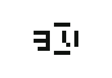
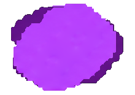
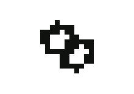

덧칠
ink3_red_01 · 빨강 · 적중
대표 수정안 v2 · 오른쪽: 문양 단독
원공격 피해의 20%인 추가타 1회를 가한다.
자체 쿨타임: 0.25초
세부 조건·주의점
추가타에서 다시 발동하는 연쇄 깊이는 2까지다.
검토: 빗금은 연속 베기로 읽힘. 원타격에 추가타가 겹치는 관계가 없음.
수정 전 문양도 보기
집중 공격
ink3_red_02 · 빨강 · 적중
1차 문양 v1 · 오른쪽: 문양 단독
같은 몬스터를 연달아 때릴 때마다 그 몬스터에게 주는 피해가 4%씩 오른다. 최대 5중첩(20%)이다.
자체 쿨타임: 0초
세부 조건·주의점
다음 공격에서 다른 몬스터만 때리거나 2초 동안 때리지 않으면 중첩이 사라진다. 한 공격이 여러 마리를 맞히면 집중 대상의 중첩을 유지한다. 근접·원거리 모두 쓸 수 있고 보스처럼 한 대상을 오래 때릴 때 강하다.
검토: 조준점은 명중·치명타와 혼동. 동일 대상에 피해가 누적되는 의미 부족.
힘 실어 건네기
ink3_red_03 · 빨강 · 무기 교대
1차 문양 v1 · 오른쪽: 문양 단독
이 잉크를 낀 무기에서 다른 무기로 바꾸면, 바꿔 든 무기의 다음 공격 피해가 30% 오른다. 공격을 시작할 때 소비한다.
자체 쿨타임: 2초
세부 조건·주의점
빗나가도 공격 시작에 소비한다.
검토: 전달 화살표는 적절하나 칼과 화살표가 뭉침.
터지는 잉크
ink3_red_04 · 빨강 · 표식 연쇄 완료
1차 문양 v1 · 오른쪽: 문양 단독
표식을 터트린 몬스터에게 기준 피해 60%인 추가타 1회를 가한다.
자체 쿨타임: 0.5초
세부 조건·주의점
표식 터트리기 한 번에 1회 발동한다.
검토: 폭발은 읽히지만 표식 발동과 일반 추가타 구분 부족.
사방으로 튀는 잉크
ink3_red_05 · 빨강 · 처치
1차 문양 v1 · 오른쪽: 문양 단독
처치한 자리 반경 2 안의 다른 몬스터에게 기준 피해 40%를 준다.
자체 쿨타임: 0.5초
세부 조건·주의점
이 피해로 처치해도 다시 터지지 않는다. 독·전기장·추가타 같은 다른 잉크 피해로 처치하면 터진다.
검토: 점들이 장식처럼 보임. 처치 지점에서 주변 적으로 퍼지는 구도가 필요.
기세를 몰아
ink3_red_06 · 빨강 · 처치
1차 문양 v1 · 오른쪽: 문양 단독
몬스터를 처치할 때마다 장착 무기의 공격력이 0.5% 오른다. 최대 30%까지 쌓인다.
자체 쿨타임: 0초
세부 조건·주의점
60마리를 처치해야 최대치에 이른다. 쌓인 수치를 런이 끝날 때까지 유지하는 것은 초안이다.
검토: 상승 그래프가 UI 통계처럼 보임. 처치 누적이라는 계기 부족.
붉은 낙관
ink3_red_07 · 빨강 · 상시
1차 문양 v1 · 오른쪽: 문양 단독
표식이 하나씩 터질 때 들어가는 피해가 50% 증가한다.
자체 쿨타임: 0초
세부 조건·주의점
표식 하나당 기준 피해 15%에만 적용하고 "표식 터트릴 시"·색 표식 파츠의 피해는 늘리지 않는다. 표식을 터트린 무기의 팔레트에 있을 때 적용한다. 이 파츠만으로는 표식이 쌓이지 않는다.
검토: 낙관은 이름과 연결되나 표식 피해 증가라는 기능은 약함.
결정타
ink3_red_08 · 빨강 · 적중
1차 문양 v1 · 오른쪽: 문양 단독
체력이 최대 체력의 30% 이하인 몬스터에게 주는 원타격 피해가 35% 증가한다.
자체 쿨타임: 0초
세부 조건·주의점
맞히기 직전의 체력으로 판정한다. 추가타·지속·장판 피해는 늘리지 않는다.
검토: 검은 알아보지만 저체력 조건 표시는 작은 점처럼 보임.
농묵
ink3_red_09 · 빨강 · 상시
1차 문양 v1 · 오른쪽: 문양 단독
공격 피해가 25% 증가하지만, 받는 피해도 15% 증가한다.
자체 쿨타임: 0초
세부 조건·주의점
마지막으로 공격한 무기의 팔레트에 있을 때만 적용한다. 받는 피해 증가는 보호막에 막히기 전 피해에 적용하며 낙사 복귀 비용에는 적용하지 않는다.
검토: 위험의 대가가 핵심인데 느낌표가 지저분하고 길게 늘어짐.
밑줄 긋기
ink3_red_10 · 빨강 · 적중
1차 문양 v1 · 오른쪽: 문양 단독
이 무기의 특수 스킬 원타격이 맞힌 몬스터에게 4초간 밑줄을 긋는다. 이 무기의 기본 공격이 밑줄 그은 몬스터에게 주는 원타격 피해가 25% 증가한다.
자체 쿨타임: 0초
세부 조건·주의점
특수 스킬 원타격에서만 긋고 추가타·지속 피해로는 긋지 않는다. 다시 그으면 지속시간만 갱신한다. 다른 무기의 기본 공격은 늘리지 않는다.
검토: 밑줄은 읽히나 특수로 표시하고 평타로 활용하는 관계 부족.
전기 발자국
ink3_yellow_01 · 노랑 · 이동
1차 문양 v1 · 오른쪽: 문양 단독
1.5unit 이동할 때마다 발밑에 작은 전기장(반경 0.75)을 2초간 남긴다. 전기장 안의 몬스터는 0.5초마다 기준 피해 15%를 받는다.
자체 쿨타임: 0초
세부 조건·주의점
제자리에서 싸우면 전기장이 생기지 않는다.
검토: 발자국인지 번개인지 모호. 발밑에 남기는 전기장을 보여야 함.
뛰어난 발걸음
ink3_yellow_02 · 노랑 · 상시
대표 수정안 v2 · 오른쪽: 문양 단독
공격 속도와 이동 속도가 각각 10% 증가한다.
자체 쿨타임: 0초
세부 조건·주의점
마지막으로 공격한 무기의 팔레트에 있을 때만 적용한다.
검토: 장화는 직관적. 이동 속도뿐 아니라 공격 속도도 증가한다는 점은 설명으로 보완.
수정 전 문양도 보기
몸통 박치기
ink3_yellow_03 · 노랑 · 대시 충돌
1차 문양 v1 · 오른쪽: 문양 단독
대시 중 부딪힌 몬스터에게 들고 있는 무기의 기본 피해 100%를 준다.
자체 쿨타임: 0초
세부 조건·주의점
대시 한 번에 몬스터마다 한 번만 맞는다. 대시 사용 횟수가 곧 발동 한도다.
검토: 충돌점은 맞지만 대시 방향과 몸통 실루엣이 약함.
휘몰아치기
ink3_yellow_04 · 노랑 · 무기 교대
1차 문양 v1 · 오른쪽: 문양 단독
이 잉크를 낀 무기에서 다른 무기로 바꾸면, 바꿔 든 무기의 공격 속도와 이동 속도가 3초간 각각 30% 오른다. 이 잉크를 낀 무기의 공격이 첫 타격·효과를 낸 뒤 다른 무기 공격으로 이어지면 그 첫 공격의 준비 구간이 매번 50% 줄어든다.
자체 쿨타임: 3초
세부 조건·주의점
공속·이속 증가는 쿨타임 3초마다 발동한다. 준비 단축은 쿨타임과 관계없이 스위칭마다 적용하고 판정·회복은 줄이지 않는다. 동작이 끝난 대기 상태에서 바꿔 든 공격과 첫 타격 전에 끊은 전환은 줄지 않는다.
검토: 회오리만으로 무기 교대 후 속도 증가를 알기 어려움.
전기 장판
ink3_yellow_05 · 노랑 · 표식 연쇄 완료
1차 문양 v1 · 오른쪽: 문양 단독
표식을 터트린 자리에 전기장(반경 2)을 3초간 깐다. 전기장 안의 몬스터는 0.5초마다 기준 피해 15%를 받는다.
자체 쿨타임: 3초
세부 조건·주의점
쿨타임이 지속시간과 같아 이 파츠의 전기장은 한 번에 하나만 있다.
검토: 번개와 바닥은 적절. 발자국 전기장과 크기·실루엣 차별화 필요.
신난다
ink3_yellow_06 · 노랑 · 처치
1차 문양 v1 · 오른쪽: 문양 단독
처치 후 4초간 이동 속도가 20% 증가하고, 이동하면서 시작한 공격의 피해가 15% 증가한다.
자체 쿨타임: 0초
세부 조건·주의점
멈춰서 공격하면 피해 증가가 없다. 연속 처치는 지속시간만 갱신한다.
검토: 불꽃이 뭉쳐 사물로 읽히지 않음. 처치 후 이동 강화라는 정체성 부족.
끊어 치기
ink3_yellow_07 · 노랑 · 적중
1차 문양 v1 · 오른쪽: 문양 단독
이 잉크를 낀 무기의 기본 공격 원타격이 몬스터에게 적중하면, 그 공격의 남은 회복 구간을 끊고 다른 무기 기본 공격을 바로 시작할 수 있다.
자체 쿨타임: 0초
세부 조건·주의점
허공을 때린 공격과 추가타·지속·장판 피해는 끊지 않는다. 판정 구간에서 누른 입력은 회복 구간이 시작될 때 실행한다. 같은 무기 연계와 특수는 바꾸지 않는다.
검토: 가위는 자르기나 해체로 오해. 공격 후딜을 끊고 교대한다는 의미 약함.
번개 표식
ink3_yellow_08 · 노랑 · 특정 색 표식 폭발
1차 문양 v1 · 오른쪽: 문양 단독
노랑 표식이 터질 때 반경 3 안의 다른 몬스터 2마리에게 기준 피해 30% 전류를 흘린다.
자체 쿨타임: 0초
세부 조건·주의점
표식이 3개 이상 쌓여 있어야 발동한다. 전류 피해는 적중 트리거를 발동하지 않는다.
검토: 분기 전류는 맞지만 가느다란 선과 점이 깨져 보임.
번지는 표식
ink3_yellow_09 · 노랑 · 표식 연쇄 완료
1차 문양 v1 · 오른쪽: 문양 단독
표식 연쇄 중 몬스터가 죽으면 남은 표식이 반경 3 안의 가장 가까운 몬스터에게 옮겨 가 이어서 터진다.
자체 쿨타임: 0초
세부 조건·주의점
옮겨 간 몬스터가 또 죽으면 다시 옮겨 간다. 근처에 몬스터가 없으면 연쇄가 끝난다. 표식을 터트린 무기의 팔레트에 있어야 한다.
검토: 화살표 방향은 적절. 적 사망 후 남은 연쇄가 옮겨간다는 의미 약함.
질주 충전
ink3_yellow_10 · 노랑 · 이동
1차 문양 v1 · 오른쪽: 문양 단독
3unit 움직일 때마다 몸에 에너지 기가 하나 쌓인다(최대 3). 이 잉크를 낀 무기로 몬스터를 때리면 쌓인 기가 방출되어 기 하나당 기준 피해 15%의 추가타를 준다.
자체 쿨타임: 0초
세부 조건·주의점
2초 동안 움직이지 않으면 쌓인 기가 사라진다. 원타격 적중에서만 방출한다. 기는 마지막으로 공격한 무기가 이 잉크를 꼈을 때만 쌓인다.
검토: 세 점은 충전을 암시. 이동해서 쌓고 적중에 소모하는 구조 보완 필요.
내달린 획
ink3_yellow_11 · 노랑 · 상시
1차 문양 v1 · 오른쪽: 문양 단독
대시 중이거나 대시가 끝난 뒤 0.5초 안에 시작한 공격의 피해가 30% 증가하고 준비 구간이 30% 줄어든다.
자체 쿨타임: 0초
세부 조건·주의점
공격을 시작하는 순간으로 판정한다. 판정·회복 구간은 줄이지 않는다.
검토: 속도선과 칼은 적절하나 서로 분리되어 보임.
옮겨 쓰기
ink3_yellow_12 · 노랑 · 무기 교대
1차 문양 v1 · 오른쪽: 문양 단독
이 잉크를 낀 무기에서 다른 무기로 바꿀 때 바라보는 쪽으로 최대 2unit 미끄러지듯 순간 이동하고, 지나간 자리의 몬스터에게 기준 피해 50%를 준다.
자체 쿨타임: 2초
세부 조건·주의점
벽·막힌 지형 앞에서 멈춘다. 지나간 몬스터마다 한 번 맞고 추가타로서 적중 트리거를 발동한다. 실제 이동 거리로 세지 않아 "이동 시" 파츠를 발동하지 않는다.
검토: 출발·도착 기둥이 문처럼 보임. 이동 경로의 피해가 드러나지 않음.
든든한 배리어
ink3_green_01 · 초록 · 상시
대표 수정안 v2 · 오른쪽: 문양 단독
보호막이 남아 있는 동안 공격 피해가 20% 증가한다.
자체 쿨타임: 0초
세부 조건·주의점
보호막을 만드는 다른 파츠가 있어야 한다.
검토: 방패 속 칼 방향은 맞음. 현재 빈 십자처럼 보여 회복으로 오해 가능.
수정 전 문양도 보기
보호막 교체
ink3_green_02 · 초록 · 무기 교대
1차 문양 v1 · 오른쪽: 문양 단독
이 잉크를 낀 무기에서 다른 무기로 바꿀 때 보호막 15를 얻는다. 보호막은 5초 유지된다.
자체 쿨타임: 15초
세부 조건·주의점
자체 쿨타임 15초.
검토: 방패 교대 방향은 적절. 작은 화살표가 방패와 뭉침.
가시갑옷
ink3_green_03 · 초록 · 체력 피해를 받음
1차 문양 v1 · 오른쪽: 문양 단독
나를 때린 몬스터에게 반드시 맞는 유도 잉크를 쏴 기준 피해 80%를 준다.
자체 쿨타임: 1초
세부 조건·주의점
공격한 몬스터가 이미 사라졌으면 발사하지 않는다. 투사체 공격은 그 투사체를 쏜 몬스터를 노린다.
검토: 가시갑옷은 이름에는 맞지만 실제 효과는 피격자에게 유도 반격. 반사/근접 가시와 오해.
전투 식량
ink3_green_04 · 초록 · 처치
1차 문양 v1 · 오른쪽: 문양 단독
몬스터를 5마리 처치할 때마다 체력 6을 회복한다.
자체 쿨타임: 0초 · 5회 누적
세부 조건·주의점
처치 수는 런 안에서 이어서 센다.
검토: 식량이 몽둥이처럼 보임. 처치 누적 회복이라는 핵심 구분 필요.
티끌 모아 태산
ink3_green_05 · 초록 · 적중
1차 문양 v1 · 오른쪽: 문양 단독
몬스터를 50번 때릴 때마다 체력 5를 회복한다.
자체 쿨타임: 0초 · 50회 누적
세부 조건·주의점
원타격과 추가타의 적중만 센다. 지속·장판 피해는 세지 않는다.
검토: 조각과 십자가 추상적. 전투 식량과 처치/적중 조건 차이가 없음.
풀컨디션
ink3_green_06 · 초록 · 상시
1차 문양 v1 · 오른쪽: 문양 단독
현재 체력이 최대 체력의 80% 이상이면 공격 피해가 15% 증가한다.
자체 쿨타임: 0초
세부 조건·주의점
피해를 받으면 쉽게 꺼진다. 보호막으로 체력을 지키면 오래 유지된다.
검토: 하트는 명확. 최대 체력 증가와 고체력 조건부 피해 증가를 혼동할 수 있음.
초록 수액
ink3_green_07 · 초록 · 특정 색 표식 폭발
1차 문양 v1 · 오른쪽: 문양 단독
초록 표식이 터질 때 체력 3을 회복한다.
자체 쿨타임: 10초
세부 조건·주의점
표식이 4개 이상 쌓여 있어야 발동한다. 자체 쿨타임 10초.
검토: 방울+회복은 직관적. 표식 발동은 다른 회복 문양과 구별할 필요.
단단한 껍질
ink3_green_08 · 초록 · 체력 피해를 받음
1차 문양 v1 · 오른쪽: 문양 단독
체력이 깎이는 피격을 받으면 보호막 10을 얻는다. 이 보호막은 시간이 지나도 사라지지 않고, 다음 피격 한 번을 최대 10까지 막은 뒤 사라진다.
자체 쿨타임: 20초
세부 조건·주의점
자체 쿨타임 20초. 다음 피격에서 남은 양과 관계없이 사라진다.
검토: 갈라진 방패가 방어 감소처럼 보임. 다음 피격 한 번을 막는 보호막이 핵심.
되갚는 잉크
ink3_green_09 · 초록 · 체력 피해를 받음
1차 문양 v1 · 오른쪽: 문양 단독
체력이 깎이는 피격을 받으면 받은 체력 피해의 200%를 저장했다가, 3초 안에 이 무기의 다음 원타격에 더한다.
자체 쿨타임: 3초
세부 조건·주의점
저장한 피해는 원타격 한 번에 모두 쓰며 그 공격이 처음 맞힌 몬스터에게만 더한다. 3초 안에 맞히지 못하면 사라진다. 다시 저장하면 새 값으로 바꾼다.
검토: 되돌림은 적절하나 어떤 피해를 저장하는지 불분명.
갑옷 깁기
ink3_green_10 · 초록 · 처치
1차 문양 v1 · 오른쪽: 문양 단독
몬스터를 10마리 처치할 때마다 보호막 12를 얻는다. 보호막은 8초 유지된다.
자체 쿨타임: 15초 · 10회 누적
세부 조건·주의점
처치 수는 런 안에서 이어서 센다. 자체 쿨타임 15초 동안 10번째 처치가 오면 그 회차는 건너뛴다.
검토: 방패 봉합이 격자처럼 보임. 보호막 회복 문양으로 더 명확하게.
범위 증폭
ink3_blue_01 · 파랑 · 상시
1차 문양 v1 · 오른쪽: 문양 단독
공격 범위(반경)가 20% 증가한다.
자체 쿨타임: 0초
세부 조건·주의점
직선 사거리와 피해량은 바꾸지 않는다. 근접 판정은 높이와 뒤쪽 너비만 넓히고 앞쪽 끝은 그대로 둔다.
검토: 사방 화살표가 조준점과 유사. 반경 증가와 직선 사거리 구분 필요.
교대 타격
ink3_blue_02 · 파랑 · 무기 교대
1차 문양 v1 · 오른쪽: 문양 단독
이 잉크를 낀 무기에서 다른 무기로 바꾸면, 바꿔 든 무기 특수 스킬의 남은 쿨타임이 1초 줄어든다. 이 잉크를 낀 무기의 쿨타임은 줄지 않는다.
자체 쿨타임: 3초
세부 조건·주의점
자체 쿨타임 3초.
검토: 모래시계+교대는 맞지만 작은 격자에서 형태가 뭉침.
여의봉
ink3_blue_03 · 파랑 · 상시
1차 문양 v1 · 오른쪽: 문양 단독
공격 사거리가 15% 증가한다.
자체 쿨타임: 0초
세부 조건·주의점
피해량·투사체 속도는 바꾸지 않는다.
검토: 긴 양방향 획은 적절. 사선이 이동/대시로 오해될 가능성.
난무
ink3_blue_04 · 파랑 · 적중
대표 수정안 v2 · 오른쪽: 문양 단독
장착 무기 특수 스킬의 남은 쿨타임을 0.1초 줄인다.
자체 쿨타임: 0.25초
세부 조건·주의점
다단 공격도 0.25초에 한 번만 줄인다.
검토: 이전 문양은 숫자처럼 보임. 수정 시계도 적중으로 쿨타임 감소한다는 차이는 없음.
수정 전 문양도 보기

공명
ink3_blue_05 · 파랑 · 표식 연쇄 완료
1차 문양 v1 · 오른쪽: 문양 단독
두 무기 특수 스킬의 남은 쿨타임을 각각 0.6초 줄인다.
자체 쿨타임: 0.5초
세부 조건·주의점
두 무기에 효과를 주는 명시적 예외다.
검토: 두 시계가 알아보기 어려운 추상 조각으로 보임.
학살
ink3_blue_06 · 파랑 · 처치
1차 문양 v1 · 오른쪽: 문양 단독
처치 후 4초간 공격 범위(반경)가 35% 증가한다.
자체 쿨타임: 0초
세부 조건·주의점
연속 처치는 지속시간만 갱신한다.
검토: 해골이 흐릿하고 범위 확대도 보이지 않음.
푸른 순환
ink3_blue_07 · 파랑 · 특정 색 표식 폭발
1차 문양 v1 · 오른쪽: 문양 단독
파랑 표식이 터질 때 두 무기 특수 스킬의 남은 쿨타임을 각각 1초 줄인다.
자체 쿨타임: 0초
세부 조건·주의점
표식이 5개 이상 쌓여 있어야 발동한다.
검토: 순환 시계는 명확하나 공명과 대상·발동조건 구별 필요.
색 번짐
ink3_blue_08 · 파랑 · 적중
1차 문양 v1 · 오른쪽: 문양 단독
이 파츠를 끼면 원타격이 표식을 묻히고, 원타격이 맞힐 때마다 반경 2 안의 가장 가까운 다른 몬스터 1마리에게도 표식 1개를 더 묻힌다.
자체 쿨타임: 0초
세부 조건·주의점
이 파츠 하나만 있어도 두 무기의 원타격이 표식을 묻힌다. 옮겨 묻힌 표식은 이 잉크를 낀 무기가 쌓은 것으로 세며, 묻히는 것만으로는 표식을 터트리지 않는다.
검토: 방울 전달은 적절. 표식 이전인지 피해 전파인지 불명확.
겹쳐 쓰기
ink3_blue_09 · 파랑 · 상시
1차 문양 v1 · 오른쪽: 문양 단독
이 무기 특수 스킬의 최대 충전 수가 1 늘어난다. 충전은 하나씩 차례로 회복한다.
자체 쿨타임: 0초
세부 조건·주의점
이 잉크를 낀 무기 자신의 특수에만 적용하며 마지막으로 공격한 무기와 관계없이 유지한다. 장착·해제하면 남은 회복 부담 비율을 유지한 채 충전 수를 바꾼다.
검토: 겹친 카드는 슬롯/인벤토리 추가로 오해. 특수 충전 횟수 증가라는 의미 보완.
정리 정돈
ink3_blue_10 · 파랑 · 처치
1차 문양 v1 · 오른쪽: 문양 단독
몬스터를 처치하면 처치한 무기 특수 스킬의 남은 쿨타임을 0.5초 줄인다.
자체 쿨타임: 0초
세부 조건·주의점
지속·장판 피해로 처치하면 그 피해를 일으킨 무기의 쿨타임을 줄인다.
검토: 해골·시계는 적절하나 크기와 선 굵기 불균형.
앞당긴 획
ink3_blue_11 · 파랑 · 무기 교대
1차 문양 v1 · 오른쪽: 문양 단독
이 잉크를 낀 무기에서 다른 무기로 바꾸면, 바꿔 든 무기의 첫 공격 1회의 사거리와 공격 범위(반경)가 40% 늘어난다.
자체 쿨타임: 2초
세부 조건·주의점
바꿔 든 무기에 효과를 주는 명시적 예외다. 공격을 시작할 때 소비한다.
검토: 두 방향 화살표는 범위·사거리와 연결. 교대 후 첫 공격이라는 조건은 설명으로 보완.
먹물 늪
ink3_purple_01 · 보라 · 적중


1차 문양 v1 · 오른쪽: 문양 단독
몬스터를 0.8초 속박하고, 속박을 걸 때 기준 피해 30%를 준다.
자체 쿨타임: 1초
세부 조건·주의점
속박은 이동만 막고 공격은 막지 않는다. 같은 몬스터는 속박이 끝난 뒤 1초 동안 다시 걸리지 않는다. 속박과 기절의 재적용 대기는 따로 센다.
검토: 사슬은 속박에 적절. 고리 모양을 실제 사슬처럼 다듬어야 함.
잔류 폭발
ink3_purple_02 · 보라 · 속박 종료
1차 문양 v1 · 오른쪽: 문양 단독
속박이 풀리는 순간 그 몬스터 주변 반경 2에 기준 피해 50% 폭발을 일으킨다.
자체 쿨타임: 0초
세부 조건·주의점
속박을 거는 다른 파츠가 있어야 한다. 속박 한 번에 한 번 터진다.
검토: 폭발 덩어리에 사슬이 묻힘. 속박 종료 시 폭발이라는 순서 부족.
선제 제압
ink3_purple_03 · 보라 · 적중
1차 문양 v1 · 오른쪽: 문양 단독
몬스터를 처음 때릴 때 0.5초 기절시킨다. 기절은 시전 중이던 공격을 끊는다.
자체 쿨타임: 0초
세부 조건·주의점
몬스터 한 생명당 한 번만 걸린다. 이 파츠를 낀 무기가 처음 맞힐 때 걸리며 다른 무기의 선타는 기회를 쓰지 않는다.
검토: 느낌표는 경고로 읽힘. 첫 타격 기절이라는 실체가 없음.
뇌진탕
ink3_purple_04 · 보라 · 상시
1차 문양 v1 · 오른쪽: 문양 단독
기절한 몬스터가 기절하는 동안 0.25초마다 기준 피해 10%를 받는다.
자체 쿨타임: 0초
세부 조건·주의점
기절을 거는 다른 파츠가 있어야 한다.
검토: 회전 별은 기절 연상 가능. 기절 중 지속 피해와 단순 기절의 차이 없음.
사약
ink3_purple_05 · 보라 · 적중
대표 수정안 v2 · 오른쪽: 문양 단독
몬스터를 3초간 중독시켜 0.5초마다 기준 피해 8%를 준다. 다시 맞히면 지속시간만 갱신한다.
자체 쿨타임: 0초
세부 조건·주의점
몬스터 행동은 막지 않는다. 최대 중첩은 슬롯 강화 +0·+1은 1, +2·+3은 2, +4·+5는 3이다.
검토: 독병은 적절. 이전 병은 실루엣이 추상적이며 수정본이 더 읽힘.
수정 전 문양도 보기
종합 병원
ink3_purple_06 · 보라 · 표식 연쇄 완료
1차 문양 v1 · 오른쪽: 문양 단독
표식을 터트린 몬스터에게 걸린 속박·기절·독·둔화 하나당 기준 피해 25%를 준다.
자체 쿨타임: 0.5초
세부 조건·주의점
상태가 없으면 피해가 없다. 같은 상태의 중첩은 하나로 센다.
검토: 십자는 회복/병원으로 오해. 여러 상태이상 수에 비례한 피해가 실제 효과.
쪽빛 족쇄
ink3_purple_07 · 보라 · 특정 색 표식 폭발
1차 문양 v1 · 오른쪽: 문양 단독
남색 표식이 터질 때 몬스터를 0.6초 속박하고, 속박을 걸 때 기준 피해 20%를 준다.
자체 쿨타임: 0초
세부 조건·주의점
표식이 6개 이상 쌓여 있어야 발동한다. 먹물 늪과 같은 속박이라 끝난 뒤 1초 동안 다시 걸리지 않고, 풀릴 때 잔류 폭발이 터진다.
검토: 족쇄는 맞지만 기존 속박과 구별할 표식 요소가 너무 작음.
보랏빛 낙인
ink3_purple_08 · 보라 · 특정 색 표식 폭발
1차 문양 v1 · 오른쪽: 문양 단독
보라 표식이 터질 때 몬스터에게 독 1중첩을 건다. 3초 동안 0.5초마다 중첩당 기준 피해 8%를 주고, 다시 걸면 지속시간을 갱신하며 최대 5중첩까지 쌓인다.
자체 쿨타임: 0초
세부 조건·주의점
표식이 7개 쌓여 있어야 발동한다. 사약과 같은 독 상태에 중첩을 더한다.
검토: 중첩 표현은 가능하나 하단 선이 바닥으로 읽힘.
독폭탄
ink3_purple_09 · 보라 · 적중
1차 문양 v1 · 오른쪽: 문양 단독
독에 걸린 몬스터를 맞히면 걸려 있는 독을 모두 지우고 남은 독 피해 전부를 한 번에 준다.
자체 쿨타임: 2초
세부 조건·주의점
자체 쿨타임 2초 동안은 터지지 않아 그 사이 독이 쌓인다. 독이 없는 몬스터를 맞히면 쿨타임을 쓰지 않는다. 같은 타격에서 사약이 독을 다시 걸면 터트린 뒤에 건다.
검토: 폭탄은 직관적. 독을 소비해 터트리는 특징 보완 필요.
넘어뜨리기
ink3_purple_10 · 보라 · 대시 충돌
1차 문양 v1 · 오른쪽: 문양 단독
대시 중 부딪힌 몬스터를 0.4초 기절시킨다.
자체 쿨타임: 3초
세부 조건·주의점
같은 몬스터는 3초 동안 다시 걸리지 않는다(몬스터마다 쿨타임). 기절 공통 회복 구간도 따른다. 보스는 지속시간에 25%를 적용한다.
검토: 사람 실루엣이 선 조각처럼 보임. 돌진 충돌로 쓰러뜨리는 동작을 크게.
약점 찌르기
ink3_purple_11 · 보라 · 상시
1차 문양 v1 · 오른쪽: 문양 단독
속박되거나 기절한 몬스터에게 주는 원타격 피해가 25% 증가한다.
자체 쿨타임: 0초
세부 조건·주의점
속박·기절을 거는 다른 파츠가 있어야 한다. 추가타·지속·장판 피해는 늘리지 않는다.
검토: 사슬과 칼이 겹쳐 뭉침. 제어된 대상에 주는 피해 증가라는 의미 정리.